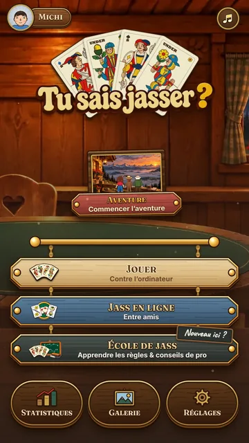
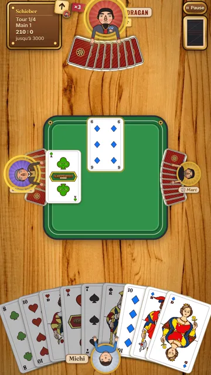
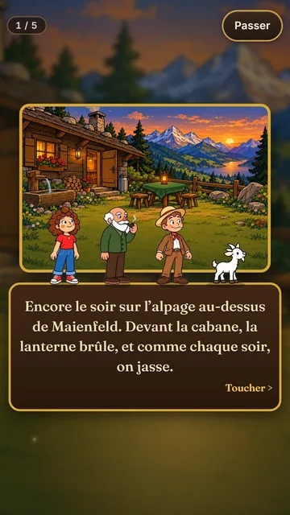
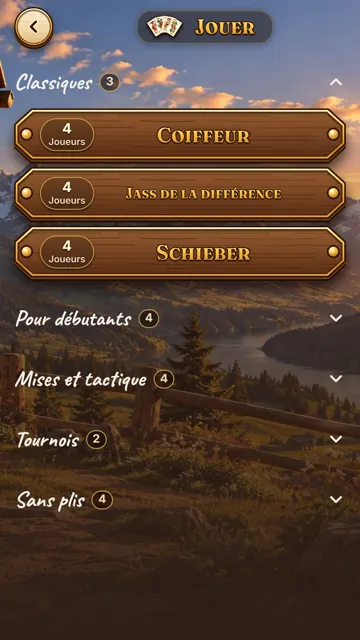

Gratuite, sans publicité et sans compte. Chibre, coiffeur, estimation et bien d’autres. En ligne avec tes amis ou contre l’ordinateur (jouable sans connexion Internet).




 Affiche en PDF (A4, en allemand)
Partager par WhatsApp
Affiche en PDF (A4, en allemand)
Partager par WhatsApp
Android
Trois taps, et tu en es.
- Rejoindre le groupe de test Sur la page Google, touche « Rejoindre le groupe » – parfois Google demande une deuxième fois, confirme alors encore une fois. Tu ne reçois pas de mails. Rejoindre le groupe
- S’inscrire comme testeur Sur la page de Google Play, touche « Devenir testeur ». Devenir testeur
- Installer l’app Dans le Play Store, touche « Installer ». Si l’app n’apparaît pas encore, attends quelques minutes et réessaie – la recherche ne la trouve pas encore. Installer l’app
iPhone et iPad
L’app est prête et dans l’App Store – un tap suffit.

Et ensuite ?
- Joue une partie de temps en temps – même une courte aide.
- Reste dans le test et n’efface pas l’app pendant les 14 jours. Les mises à jour arrivent automatiquement par le Play Store.
- Un problème ou une idée ? Écris-moi à kontakt@chaschjasse.ch ou utilise « Envoyer des commentaires au développeur » dans le Play Store.
Quelque chose ne marche pas ?
Android : « Devenir testeur » affiche une erreur ou l’app n’est pas disponible.
Le plus souvent, tu es connecté avec des comptes Google différents aux étapes 1 et 2. Vérifie en haut à droite dans le navigateur ou dans le Play Store quel compte est actif, et refais les étapes avec le même compte.
Pourquoi est-ce si compliqué ?
Pour que l’app puisse paraître sur Google Play, au moins 12 personnes doivent rester inscrites comme testeurs pendant 14 jours. Ces étapes sont imposées par Google.
Quelles données vois-je en tant que développeur ?
L’adresse e-mail de ton compte Google (comme membre du groupe de test) ainsi que les commentaires que tu envoies toi-même. Plus de détails dans la déclaration de confidentialité.
Faire passer le mot
Tu connais quelqu’un avec un téléphone Android qui aime jasser ? Envoie-lui le lien directement par WhatsApp – le message est déjà écrit :
Ou fais scanner ce code – il marche pour Android et iPhone (la page s’ouvre en allemand, le bouton DE/FR change de langue) :
chaschjasse.ch/fr/test.html